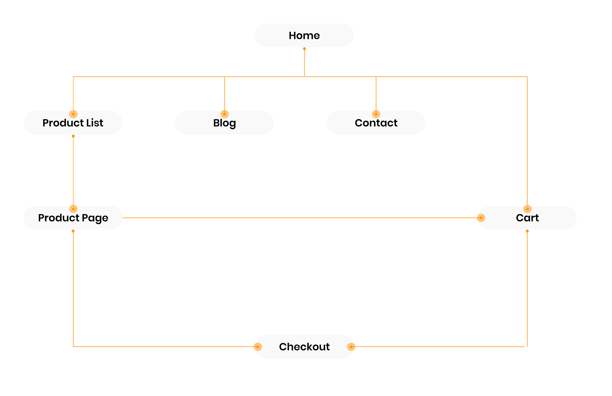
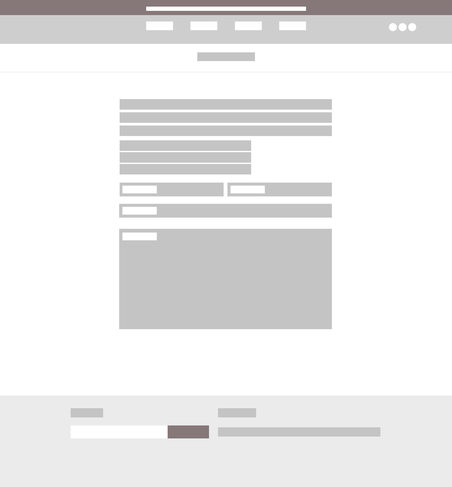

They also provided pregnancy and baby advice from the perspective of parenthood during times of lockdowns, supporting parents-to-be on their journey from bump to baby and beyond by connecting mothers with experts and providing online resources.
My Role
My role saw me in two main areas: the design space and the marketing space.
I was tasked with building the website using Shopify and creating a customer/user experience that not only flowed well but was easy and straightforward to use for the target audience of expectant mothers. Furthermore, I led the development of the branding and visual design of the e-commerce platform, creating a space that was both aesthetic and relevant to a motherly theme.
I actively optimised the Shopify app's SEO and implemented strategic Google Ads campaigns to ensure enhanced visibility, increased traffic, and conversions.
Information Architecture
Considering the target audience of expectant mothers, creating a basic and simple web structure is important. I built an information architecture diagram to map out the priorities of the customer. Bringing focus to a user-friendly customer journey, the diagram aims to direct customers to checkout as seamlessly as possible.
With a theme-coded website builder like Shopify, I ensured that only key pages and functions are mapped out, to prevent any roadblocks in cases where certain functions are ambitious to create in the builder.

E-Commerce Friendly
E-commerce sites can be tricky to develop, especially when using a theme-coded builder such as Shopify. Creating wireframes that are simple, easy to build and modular is the most effective directive to prevent redesigning in cases where the builder is not able to replicate the design.
Hence, I created a system of wireframes that understands the ecosystem of Shopify and presents itself in a modular manner.

Visual Identity
Building an identity to appeal to expectant mothers and create a user-friendly interface is a focal point in ensuring users' needs are met. Focusing on bringing the colour palette close to a nude scheme emphasises the rawness and purity of pregnancy.
Using large, clear images and soft typefaces gives the brand its nurturing appearance.
Design for Seamless User Experience
Fleshing out the rest of the pages and shaping the website all together. High-fidelity prototyping was an important step in allowing me to build these later on in Shopify.
Efficient Checkout
After discussing with various stakeholders, we decided an easy-access cart was needed for direct access. A sidebar checkout reduces the number of clicks from different pages to reach the cart. By removing the need for the cart to be on a page of its own, users are less likely to be lost on the website and this allows quicker access to the checkout page.
Final Thoughts
I'm super excited that Mamas Kangaroo was able to launch successfully and oversaw expansion across the UK and in Australia. Some key takeaways involved understanding theme-coded builders like Shopify and their interaction with the design process. Ultimately, it can be very frustrating trying to replicate prototypes that aren't as viable in application.